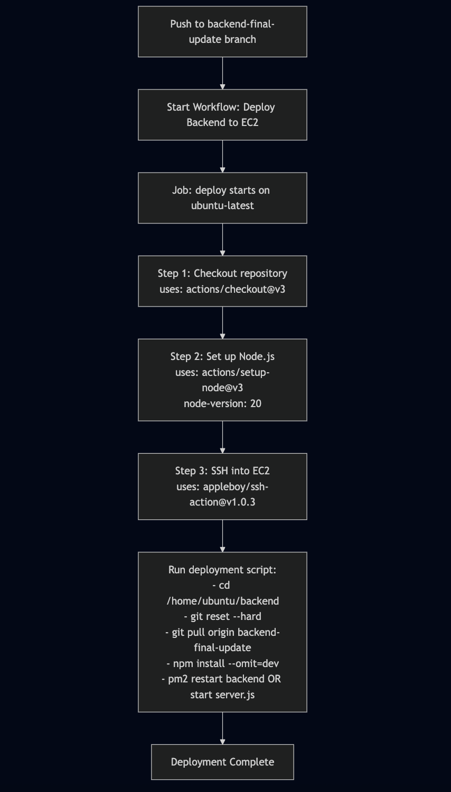
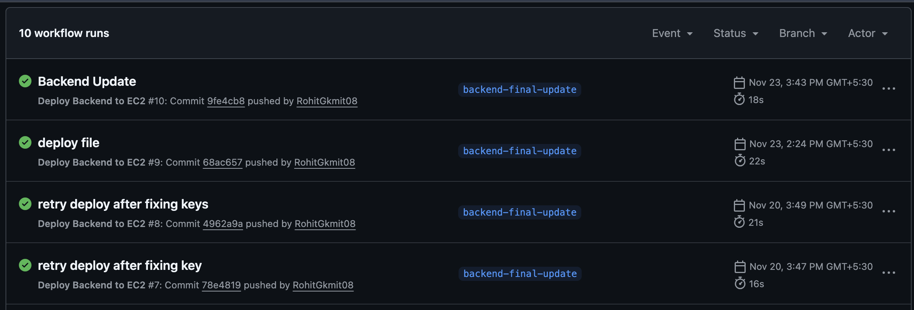

CI/CD Workflow
This document describes the Continuous Integration and Continuous Deployment (CI/CD) pipeline implemented for the DailyPost application, specifically for backend deployment to AWS EC2.
What is CI/CD?
Continuous Integration (CI) and Continuous Deployment (CD) are DevOps practices that automate the process of building, testing, and deploying applications.
- CI ensures that code changes are automatically tested and integrated into the main codebase, catching issues early in the development cycle.
- CD automates the deployment process, allowing code changes to be automatically deployed to production environments after passing all tests and checks.
Together, CI/CD reduces manual errors, speeds up delivery, and ensures consistent deployments across environments.
Workflow Overview
The backend deployment workflow is triggered automatically when code is pushed to the backend-final-update branch. The entire process is orchestrated using GitHub Actions, a CI/CD platform integrated with GitHub repositories.
Deployment Workflow Steps
1. Trigger Event
Event: Push to backend-final-update branch
The workflow is automatically initiated when a developer pushes code changes to the backend-final-update branch in the repository.
2. Workflow Initiation
Action: Start Workflow: Deploy Backend to EC2
GitHub Actions detects the push event and starts the deployment workflow.
3. Job Environment Setup
Environment: ubuntu-latest
The deployment job runs on a GitHub-hosted runner using the latest Ubuntu environment, providing a clean, consistent execution environment.
4. Step 1: Checkout Repository
Action: actions/checkout@v3
This step retrieves the source code from the repository, making it available for subsequent steps in the workflow.
5. Step 2: Set up Node.js
Action: actions/setup-node@v3
Node Version: 20
Configures the environment with Node.js version 20, ensuring the correct runtime environment for the backend application.
6. Step 3: SSH into EC2
Action: appleboy/ssh-action@v1.0.3
Establishes a secure SSH connection to the Amazon EC2 instance where the backend application is hosted. This step uses SSH keys configured as GitHub secrets for secure authentication.
7. Step 4: Run Deployment Script
Once connected to the EC2 instance, the following commands are executed:
cd /home/ubuntu/backend
git reset --hard
git pull origin backend-final-update
npm install --omit=dev
pm2 restart backend OR start server.jsCommand Breakdown:
- cd /home/ubuntu/backend: Navigates to the backend application directory
- git reset --hard: Discards any local changes that might conflict with the deployment
- git pull origin backend-final-update: Pulls the latest code from the repository
- npm install --omit=dev: Installs production dependencies only (excludes development dependencies)
- pm2 restart backend: Restarts the application using PM2 process manager (or starts the server if not running)
8. Deployment Complete
Upon successful execution of all steps, the deployment is marked as complete, and the application is live with the latest changes.
Workflow Visualization

The diagram above illustrates the complete deployment workflow from code push to successful deployment.
Workflow Run History
The GitHub Actions interface provides visibility into all workflow runs, showing:
- Status: Success (✓) or failure indicators
- Branch: The branch that triggered the deployment
- Timestamp: When the deployment occurred
- Duration: Time taken to complete the deployment (typically 16-22 seconds)
- Commit Information: Details about the commit that triggered the deployment

Example workflow run history showing successful deployments to the backend-final-update branch.
Key Benefits
- Automated Deployments: Eliminates manual deployment steps and reduces human error
- Fast Deployment: Complete deployment cycle in under 30 seconds
- Consistency: Every deployment follows the same process, ensuring reliability
- Visibility: Clear history and status of all deployments
- Rollback Capability: Easy to identify and revert to previous working versions if needed
Security Considerations
- SSH keys are stored as GitHub secrets and never exposed in logs
- Only authorized branches trigger deployments
- Production dependencies are installed, reducing attack surface
- PM2 ensures process stability and automatic restarts
Summary
The CI/CD pipeline for DailyPost backend ensures:
- Automated deployment process from code push to production
- Fast deployment cycles (typically 16-22 seconds)
- Reliable and consistent deployments
- Secure authentication and execution
- Transparent workflow history and monitoring
This setup enables rapid iteration and deployment while maintaining high standards of reliability and security.